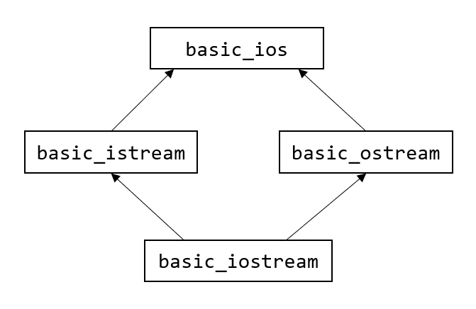
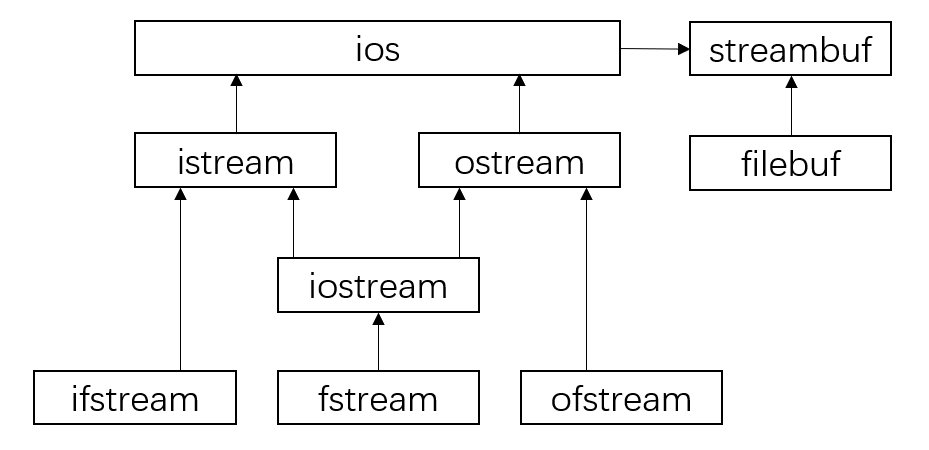
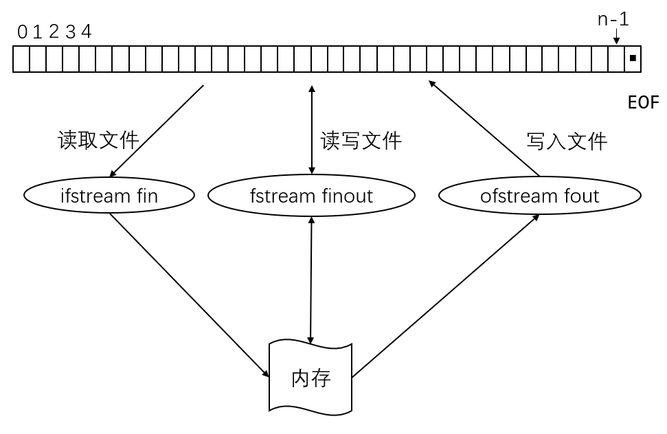

C++ IO流¶
本章大纲¶
-
输出流和输入流的常用成员函数
-
流操纵符
-
流的错误状态
-
文件和流
-
文件操作
- 打开文件
- 读 / 写文件
- 关闭文件
C++ IO¶
IO类型¶
是什么类型的输入输出，要看输入输出的对象是什么
- 以**标准I/O**设备为对象
- 从键盘、鼠标得到的数据是进入内存的，该数据是**输入数据**。
-
将数据从内存送到显示器、打印机等，该数据是**输出数据**。
-
以**外存磁盘文件**为对象
- 内存中的数据存储到磁盘文件中，叫**输出文件**；
-
从磁盘文件中的数据装载入内存中，叫**输入文件**。
-
以**内存中指定的空间**作为对象
- 常指定一个字符数组作为存储空间，这种I/O称为**字符串的输入输出**。

数据流¶
- 数据之间的传输过程称作流(stream)
- 输入流——表示数据从某个载体或设备传送到内存
-
输出流——表示数据从内存传送到某个载体或设备
-
在进行I/O操作时
- 首先进行“打开”操作，使流和文件发生联系
- 建立联系后的文件才允许数据流入或流出
- I/O结束后，使用“关闭”操作使文件与流断开联系

流对象¶
-
C++将I/O流定义为类，叫做流类，stream类。属于流类的对象是流对象。
-
系统已经以运算符或函数的形式做好了对标准外设（键盘、显示器、打印机、文件）的接口，使用时只需按照要求的格式调用即可
cin，标准输入流对象cout，标准输出流对象
IO流模板层次¶

IO库各种流类¶
| 类名 | 作用 | 头文件 |
|---|---|---|
| ios | 抽象基类 | \<iostream> |
| istream | 通用输入流和其他输入流的基类 | \<iostream> |
| ostream | 通用输出流和其他输出流的基类 | \<iostream> |
| iostream | 通用输入输出流和其他输入输出流的基类 | \<iostream> |
| ifstream | 输入文件流类 | \<fstream> |
| ofstream | 输出文件流类 | \<fstream> |
| fstream | 输入输出文件流类 | \<fstream> |
| istrstream | 输入字符串流类 | \<strstream> |
| ostrstream | 输出字符串流类 | \<strstream> |
| strstream | 输入输出字符串流类 | \<strstream> |
输入和输出流对象¶
cout，标准输出cerr，标准错误输出，无缓冲，发送给cerr的内容立即被输出clog，类似cerr，有缓冲，缓冲区满时被输出cin，标准输入
标准输出流¶
数据流向：从**内存**流向**标准输出设备**(显示器)。
cout¶
在控制台(显示器)输出，用流插入运算符"<<"向cout输出数据
| C++ | |
|---|---|
1 2 | |
cerr¶
在控制台(显示器)输出错误信息，用流插入运算符"<<向cerr输出数据
| C++ | |
|---|---|
1 | |
cerr的用法与cout类似。
cout流对象与cerr流对象的不同之cout的输出默认是显示器，但可以被重定向为输出到磁盘文件cerr只能定向输出到显示器
clog¶
在控制台(显示器)输出错误信息，用流插入运算符"<<"向clog输出数据
| C++ | |
|---|---|
1 | |
clog的用法与cerr类似。
clog流对象与cerr流对象的不同之处cerr是不经过缓冲区，直接向显示器输出有关信息。clog的输出先存储在缓冲区，遇到缓冲区满或遇到endl时才向显示器输出。
| C++ | |
|---|---|
1 2 3 4 5 6 7 8 9 10 11 12 13 14 15 16 | |
用于控制输出格式的流成员函数¶
| 流成员函数 | 与之作用相同的控制符 | 作用 |
|---|---|---|
| precision(n) | setprecision(n) | 设置实数的精度为n位 |
| width(n) | setw(n) | 设置字符的宽度为n位 |
| fill© | setfill© | 设置填充字符c |
| setf() | setioflags() | 设置输出格式状态，括号中应给出格式状态 |
| unsetf() | resetioflags() | 终止已设置的输出格式状态，在括号中应指定内容 |
设置格式状态的格式标志¶
| 格式标志 | 作用 |
|---|---|
| ios::left | 输出数据在本域宽范围内向左对齐 |
| ios::right | 输出数据在本域宽范围内向右对齐 |
| ios::internal | 数值的符号位在域宽内左对齐，数值右对齐，中间由填充字符填充 |
| ios::dec | 设置整数的基数为10 |
| ios::oct | 设置整数的基数为8 |
| ios::hex | 设置整数的基数为16 |
| ios::showbase | 强制输出整数的基数(八进制数以0打头，十六进制数以0x打头) |
| ios::showpoint | 强制输出浮点数的小点和尾数0 |
| ios::uppercase | 在以科学记数法格式E和以十六进制输出字母时以大写表示 |
| ios::showpos | 对正数显示“+”号 |
| ios::scientific | 浮点数以科学记数法格式输出 |
| ios::fixed | 浮点数以定点格式(小数形式)输出 |
| ios::unitbuf | 每次输出之后刷新所有的流 |
| ios::stdio | 每次输出之后清除stdout, stderr |
说明
cout.width(n)与格式控制符setw(n)相似cout.fill(c)与格式控制符setfill(c)相似
| C++ | |
|---|---|
1 2 3 4 5 6 7 8 9 10 11 12 13 14 15 16 17 18 19 20 21 22 23 24 25 26 27 28 29 30 31 32 | |
标准输入流¶
从标准输入设备(键鼠等)流向程序的数据流。
cin¶
| C++ | |
|---|---|
1 2 | |
当输入时遇到无效的字符或遇到文件结束符 ctrl+z 时，cin处于出错状态,无法正常提取数据(cin=false)
| C++ | |
|---|---|
1 2 | |
| C++ | |
|---|---|
1 2 3 4 5 6 7 8 9 10 11 12 13 | |
istream和ostream¶
istream的公有成员函数¶
| 函数 | 功能 |
|---|---|
| read | 无格式输入指定字符数 |
| get | 从流中提取字符，包括空格 |
| getline | 从流中提取一行字符 |
| ignore | 提取并丢弃流中指定字符数 |
| peek | 返回流中下一个字符，但不从流中删除 |
| gcount | 统计最后输入的字符个数 |
| eatwhite | 忽略前导空格 |
| seekg | 移动输入流指针 |
| tellg | 返回输入流中指定位置的指针值 |
示例：
| C++ | |
|---|---|
1 2 3 4 | |
ostream的公有成员函数¶
| 函数 | 功能 |
|---|---|
| put | 无格式，插入一个字节（ostream& put(char ch);） |
| write | 无格式，插入一字节序列(ostream& write(const char* pch, int nCount);) |
| flush | 刷新输出流 |
| seekp | 移动输出流指针 |
| tellp | 返回输出流中指定位置的指针 |
用于字符输入的流成员函数¶
cin.get()¶
功能：从输入流提取1个字符 返回值：
-
提取到的字符
-
若遇到文件结束符，则返回值为EOF,即 -1
| C++ | |
|---|---|
1 2 3 | |
cin.get(ch)¶
功能：从输入流提取1个字符放入ch;
返回值：
- 函数返回值就是非0值
- 若遇到文件结束符,则返回值为0
| C++ | |
|---|---|
1 2 3 | |
cin.get(char*,n,ch)¶
cin.get(字符数组, 字符个数n, 终止字符)
cin.get(字符指针, 字符个数n, 终止字符)
功能：从输入流提取n-1个字符放入数组;
返回值：
- 函数返回值就是非0值
- 若遇到文件结束符,则返回值为0
| C++ | |
|---|---|
1 2 3 | |
cin.get()对比cin.getline()¶
cin.get(字符数组, 字符个数n, 终止字符)
cin.getline(字符指针, 字符个数n, 终止字符)
相同之处：
- 从输入流提取n-1个字符放入数组
- 函数返回值是非0值
- 若遇到文件结束符,则返回值为0
不同之处：
- 当读到终止字符时，
- cin.getline()将指针移到终止字符之后；
- cin.get()将指针移到终止字符处；
- 则下次继续读取时的位置就不同
| C++ | |
|---|---|
1 2 3 4 5 6 7 8 9 10 11 12 13 14 15 16 17 18 19 20 21 22 23 24 25 26 27 28 | |
流错误状态¶
所有流都把流的状态存储在状态字中；不同标志位中存储不同的错误状态位；包含在类ios的enum成员中
流错误常量¶
| 标识常量 | 值 | 意义 |
|---|---|---|
| ios::goodbit | 0x00 | 状态正常 |
| ios::eofbit | 0x01 | 文件结束符，当文件尾时设置该标志 |
| ios::failbit | 0x02 | IO操作失败，数据未丢失，可以恢复 |
| ios::badbit | 0x04 | 非法操作，数据丢失，不可恢复 |
流错误处理函数¶
| 函数 | 功能 |
|---|---|
| int eof() const; | 返回eofbit状态值。文件结束符时返回1，否则返回0 |
| int fail() const; | 返回failbit状态值 |
| int good() const; | eofbit、failbit、badbit都没有被设置，则返回1 |
| int bad() const; | badbit被设置，则返回1 |
| int rdstate() const; | 返回状态字 |
| void clear(int nState=0); | 恢复或设置状态字 |
| C++ | |
|---|---|
1 2 3 4 5 6 7 8 9 10 11 12 13 14 15 16 17 18 19 20 21 22 23 | |
文件操作与文件流¶
文件：存储在存储设备（磁带、光盘、软盘、硬盘等）上的数据的集合。
根据用途分类：程序文件、数据文件
根据内容分类：文本文件、二进制文件
- 文本文件：每个字节存储一个ASCII码，代表一个字符，每一行以'\n'结尾，文本结束符
0x1A - 存储量大，速度慢，字符操作
- 二进制文件：数据以二进制形式存储。
- 存储量小，速度快，存放中间结果
- 文本文件(ASCII文件)：
- 文件中的内容都是字符, 以ASCII码形式存在文件内。如: 12345在文本文件中是以 ‘1’,’2’,’3’,’4’,’5’共 5个字符形式存储的
- 每一个字节存放一个ASCII码，代表一个字符。其输出与字符一一对应，一个字节代表一个字符，因此便于对字符进行逐个处理。
- 文本文件由文本行组成，每行中可以有0个或多个字符，并以换行符‘\n’结尾。
- 文本结束标志是0x1A。
- 二进制文件：文件中的内容是以数据的二进制形式存储的。如: 12345在二进制文件中按1个整数类型以二进制形式存储,占4个字节空间
- 把数据按其在内存中的存储形式原样存放在磁盘上，一个字节并不对应一个字符，不能直接输出字符形式。
流类图¶

文件流¶
- 用标准流进行I/O时，系统自动地完成数据类型的转换。
- 对于输入流，要将输入的字符序列形式的数据变换成计算机内部形式的数据（二进制或ASCII）后，再赋给变量，变换后的格式由变量的类型确定。
- 对于输出流，将要输出的数据变换成字符串形式后，送到输出流（文件）中。
文件操作与标准输入设备对比¶
在涉及文本文件的操作时，将输入文件看成键盘，将输出文件看成显示器，格式不变。只需在程序中增加打开与关闭文件的语句。
文件和流¶

n为文件长度，黑色方块■为文件结束符
文件操作¶
头文件#include <fstream>
- 定义文件流对象
- 打开文件
- 读写文件
- 关闭文件
1、定义文件流对象
| C++ | |
|---|---|
1 2 3 4 5 6 | |
2、打开文件
- 与外部文件关联；
- 指定文件的打开方式；
- 方法一：调用流类带参数的**构造函数**，建立流对象时连接外部文件
- 方法二：先建立流对象，后调用fstream::open()函数
方法一：
流类 对象名（文件名，打开方式）
| C++ | |
|---|---|
1 2 3 4 | |
打开方式常量表：
| 标识常量 | 意义 |
|---|---|
ios::in |
只读打开 |
ios::out |
只写打开 |
ios::ate |
文件指针指向尾部 |
ios::app |
追加写 |
ios::trunc |
删除文件原有内容 |
ios::binary |
二进制打开 |
ios::in|ios::out |
读写打开 |
ios::out|ios::binary或ios::in|ios::binary |
只读或只写打开二进制文件 |
方法二：
| C++ | |
|---|---|
1 2 3 4 5 6 7 8 9 10 | |
文件读写操作¶
| C++ | |
|---|---|
1 2 | |
文件关闭操作¶
-
关闭文件操作包括把缓冲区数据完整地写入文件，添加文件结束标志，切断流对象和外部文件的连接
-
当一个流对象的生存期结束，系统也会自动关闭文件；
-
若流对象的生存期没有结束，用close()关闭文件后，该流对象可以重用．
-
文件读写完毕，必须关闭
- void ifstream::close( );
- void ofstream::close( );
- void fstream::close( );
| C++ | |
|---|---|
1 2 3 | |
打开与关闭错误¶
检测文件是否成功打开，可在条件表达式中使用取反操作符（！）测试流状态 (一般是读文件的时候用）
| C++ | |
|---|---|
1 2 | |
为了测试成功关闭文件，可以调用fail()函数
| C++ | |
|---|---|
1 2 3 | |
从文件读取数据¶
将文件类对象看成键盘和显示器即可
| C++ | |
|---|---|
1 2 3 4 | |
把数据写到文件¶
| C++ | |
|---|---|
1 2 3 4 | |
关闭文件¶
| C++ | |
|---|---|
1 2 3 4 5 6 7 8 9 | |